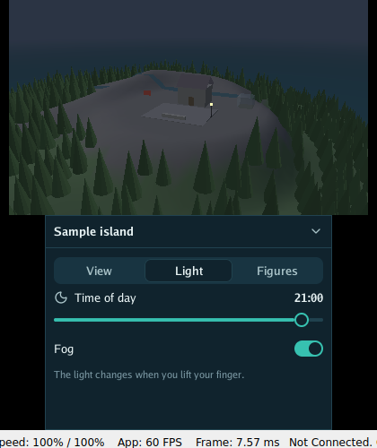

go-3ds runs Go programs on the Nintendo 3DS: a 3D island on the top screen, buttons and sliders you touch on the bottom one, and real 3D with the slider.

It is the console’s side of the family: the program’s loop, the buttons and the touch screen, and a go-ui interface on the bottom screen. go-renderer draws on the console through its own graphics chip. Programs are built with a special version of TinyGo and opened from the Homebrew Launcher.
Pick the line that sounds like you.
| If you… | Read | Time |
|---|---|---|
| are new and want a program on the console | 🏴☠️ The quest: an island in your pocket, in 5 levels | 45 min |
| want to know what each package does and what you need | What is where | 10 min |
| plan a larger program for the console | Before writing a larger program | 5 min |
The menu on the left (or the files in docs/) follows this order.
Start
See what is where.
| Word | What it means |
|---|---|
| Go | A programming language. To try these projects you install it once, from go.dev, and type go run … in a terminal. |
| Terminal | The window where you type commands: Terminal on macOS and Linux, PowerShell on Windows. |
| Repository | A project’s folder of files, kept on GitHub. git clone <address> copies it to your computer. |
| Homebrew | Programs for a game console that it was not sold with, opened from the Homebrew Launcher. |
| Quest | The tutorial of these docs: short levels, each ending with something that works and an achievement. |
go-3ds is one of a family of small projects that work together:
| Project | What it does |
|---|---|
| go-renderer | draws 3D scenes and flat interfaces |
| go-ui | buttons, panels and whole applications |
| go-ui-android | Android apps that look like Android’s own |
| go-sound | sound and music |
| go-scene-builder | 3D scenes from a flat map |
| go-simulator | simulations that change a scene |
| go-simulator-terrain | ground shaped by rivers |
| go-simulator-climate | weather and biomes |
| go-simulator-flora | forests that grow |
| go-simulator-urban | towns that grow |
| go-simulator-motion | a scene that moves |
| go-3ds (this one) | Go on the Nintendo 3DS |
⚠️ All of them are educational experiments, written with an AI assistant and pending review by their author: good for learning and playing, not for production.